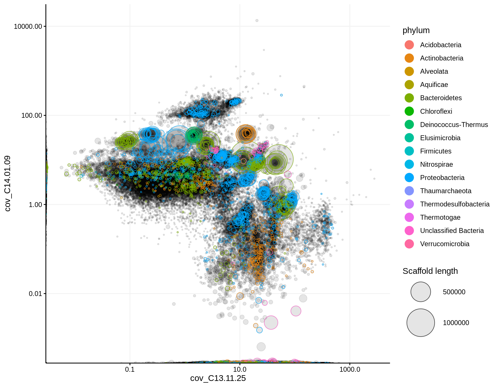
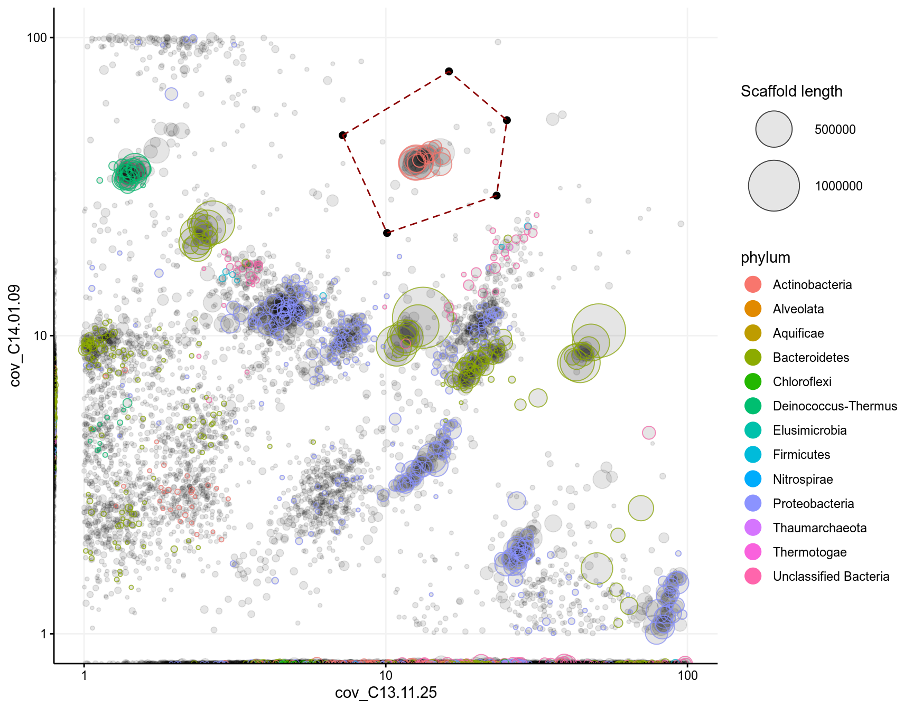
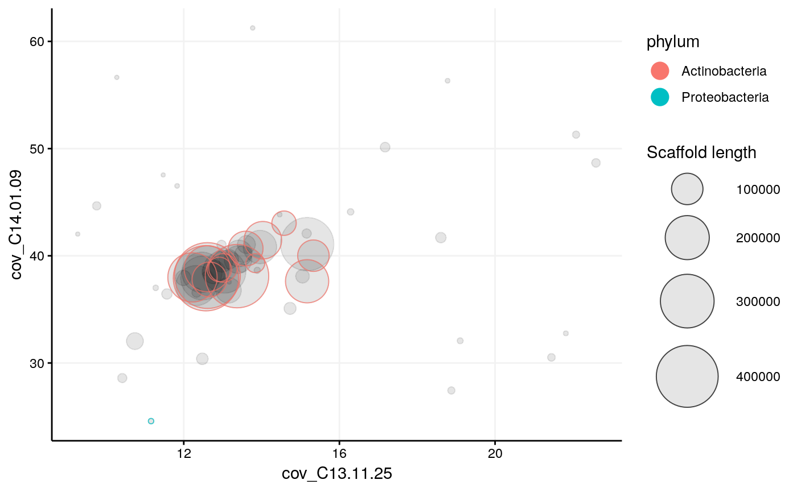
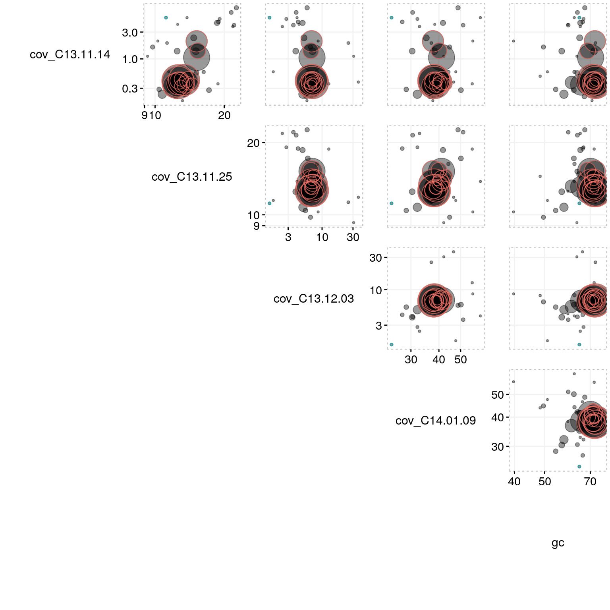
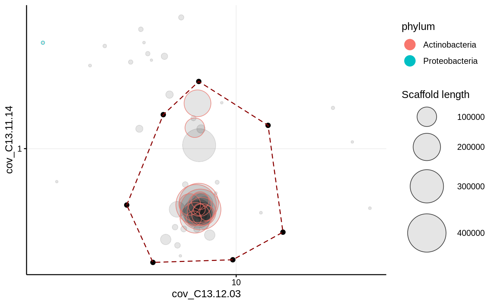
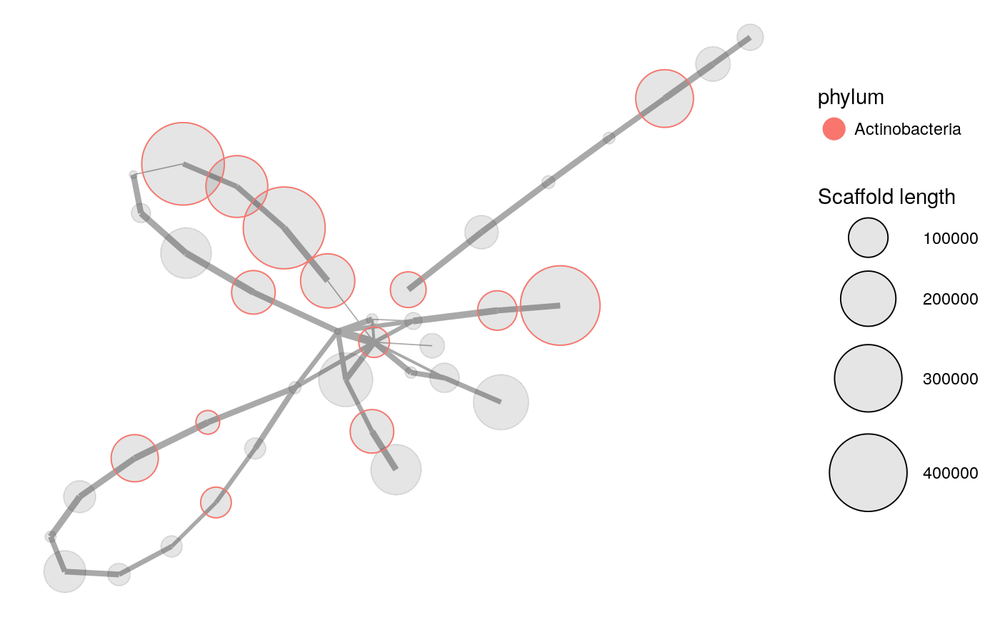
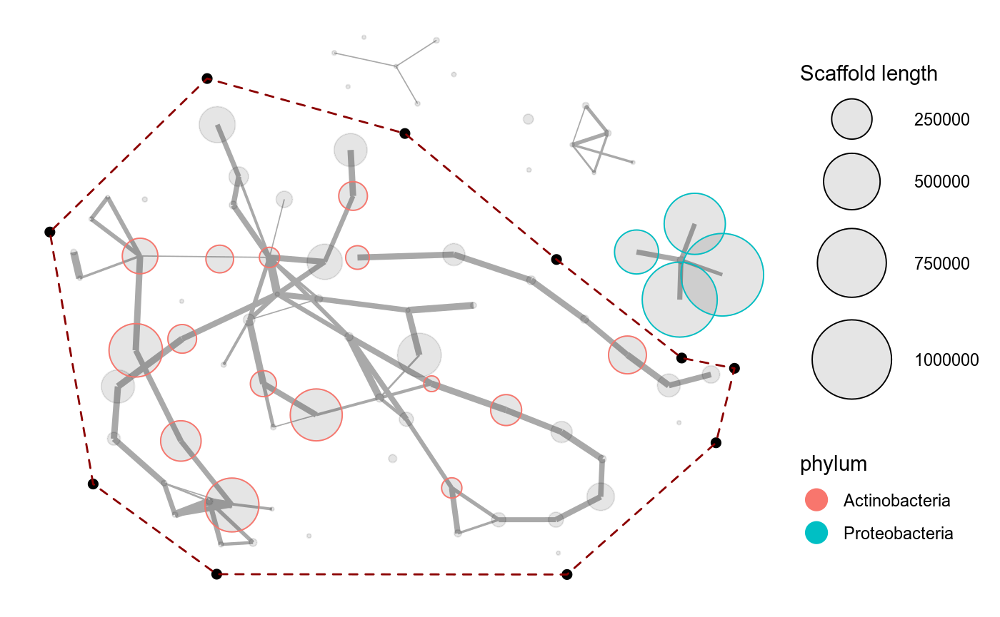
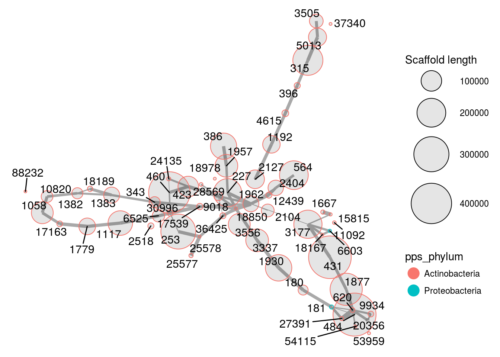
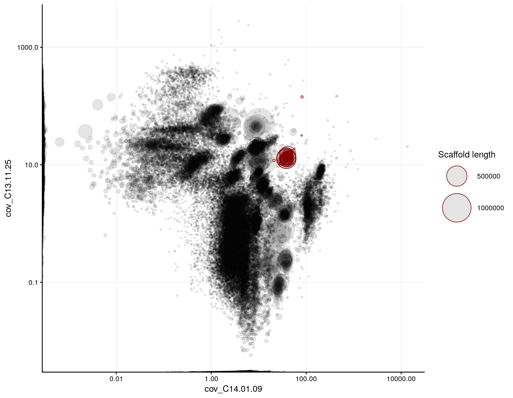

This is a brief guide explaining the basics of how to use mmgenome2 for genome binning and extraction from metagenomes. It is meant to only demonstrate fundamental principles and operations. For more detailed documentation of all mmgenome2 functions, their arguments, as well as example code, please refer to the Functions page. First, install mmgenome2 as described on the frontpage, and then download the example data from figshare and unzip the contained files into a folder of choice. Preloaded data is also available with data("mmgenome2").
mmgenome2 requires at minimum two types of data; the assembly and at minimum one coverage profile. Any number of coverage profiles can be loaded at once. Other than the assembly and coverage profiles, optional data includes essential genes, taxonomy, small subunit taxonomic classification, and anything else that could be relevant. The only requirement is that the data is in a row-by-column format, so that the first column contains scaffold names matching those in the assembly, and then any number of columns containing relevant information for the binning process. Metagenome data often consists of numerous files that first have to be loaded into R. The various files are loaded with the mmload function, which checks, adjusts, and combines the data into a single data frame, here called mm, which will be used in all other mmgenome2 functions:
library(mmgenome2)
mm <- mmload(
assembly = "data/assembly.fa",
coverage = "data/",
essential_genes = "data/essential.csv",
taxonomy = "data/tax.csv",
additional = read.csv("data/phylopythias.csv"),
verbose = TRUE,
kmer_pca = FALSE,
kmer_BH_tSNE = FALSE
)This loads all the files into a single data frame object called mm. By giving a folder path to coverage, mmload expects all files in the folder that end with "_cov" to be coverage profiles, and will automatically load them all and name them by filename. By default the scaffold lengths as well as the GC content of each scaffold are calculated. Notice that it is also possible to perform Principal Components Analysis and t-SNE on tetra-nucleotide frequencies by setting kmer_pca = TRUE and kmer_BH_tSNE = TRUE, which will then also be available in the output data frame mm to aid the binning process. Any additional data can be provided with additional.
By simply typing the name of the object in the console we get a brief overview of the data frame:
mm## # A tibble: 97,285 x 18
## scaffold length gc cov_C13.11.14 cov_C13.11.25 cov_C13.12.03
## <chr> <int> <dbl> <dbl> <dbl> <dbl>
## 1 1 8264 57.8 1.44 53.6 0.
## 2 2 1027 57.0 0.625 24.2 0.
## 3 3 1665 55.9 13.5 434. 0.166
## 4 4 9056 35.9 0.0100 23.4 0.
## 5 5 3343 64.0 3.20 16.4 0.
## 6 6 98207 39.1 0.00966 24.5 3.29
## 7 7 6480 63.0 2.61 19.2 1.46
## 8 8 15790 61.7 2.78 21.2 1.62
## 9 9 1403 70.4 85.1 192. 0.
## 10 10 2018 70.2 50.3 101. 0.
## # ... with 97,275 more rows, and 12 more variables: cov_C14.01.09 <dbl>,
## # geneID <chr>, phylum <chr>, count <chr>, all.phylum.assignments <chr>,
## # class <chr>, all.class.assignments <chr>, pps_phylum <fct>,
## # pps_class <fct>, pps_order <fct>, pps_family <fct>, pps_genus <fct>The mmstats function can also calculate some basic statistics about the data:
mmstats(mm)## General stats
## Scaffolds 97285
## N50 5291
## Length.total 331908376
## Length.max 1446979
## Length.mean 3411.71
## Length.min 1000
## weighted_GC_mean 52.22
## cov_C13.11.14 2.62
## cov_C13.11.25 16.06
## cov_C13.12.03 2.91
## cov_C14.01.09 11.58
## Ess.genes.total 7138
## Ess.genes.unique 109In mmgenome2 there are currently 4 different plotting functions; mmplot, mmplot_pairs, mmplot_cov_profiles, and mmnetwork. mmplot can for example be used to generate a differential coverage plot with any two coverage profiles from the mm data frame, for example cov_C13.11.25 and cov_C14.01.09. It is often a good idea to apply a log10 scale to the axes, or to adjust the axis limits to get a symmetrical plot or to zoom in at selected regions. By default the axes are automatically scaled. In the following plot the scaffolds are colored by taxonomy, but we could also color by GC content or any other variable in mm:
mmplot(mm,
x = "cov_C13.11.25",
y = "cov_C14.01.09",
color_by = "phylum",
x_limits = c(1,NA), #show only coverage higher than 1 on x-axis
y_limits = c(1,NA), #show only coverage higher than 1 on y-axis
x_scale = "log10",
y_scale = "log10")
In both mmplot and mmnetwork there is incorporated a locator feature, which makes it possible to interactively click in the plot and capture the exact positions of the mouse clicks on the axes plotted. This is enabled by setting locator = TRUE and is used to extract scaffolds within a region of interest, reproducibly. The selection of points can then be highlighted as a polygon by the selection argument:
selection <- data.frame(cov_C13.11.25 = c(7.2, 16.2, 25.2, 23.3, 10.1),
cov_C14.01.09 = c(47, 77, 52.8, 29.5, 22.1))
mmplot(mm,
x = "cov_C13.11.25",
y = "cov_C14.01.09",
min_length = 3000,
color_by = "phylum",
x_scale = "log10",
x_limits = c(1, 100),
y_scale = "log10",
y_limits = c(1, 100),
#locator = TRUE, #uncomment to use the locator and return a selection
selection = selection)
To extract all scaffolds within the selection polygon (including those not shown in the plot if a min_length has been set) from mm use mmextract and provide the selection in the same way as with mmplot(mm, ..., selection = selection), and then save in a new object mm_subset1:
mm_subset1 <- mmextract(mm, selection = selection)## 61 scaffolds (or 1.34% of the scaffolds in mm, weighted by length) remain after 97224 of 97285 scaffolds have been filtered.Then the extracted set of scaffolds can be plotted separately to get a closer look (no log10 scaled axes or min_length set this time):
mmplot(mm_subset1,
x = "cov_C13.11.25",
y = "cov_C14.01.09",
color_by = "phylum")
To look for any eventual contaminants or to have a look at the scaffolds at different coverage profiles we can use the mmplot_pairs function to plot more than two coverage profiles at the same time as well as any other variables. To see which variables that are available to plot simply type the name of the object in the console again (it is recommended to only plot continuous/numerical variables). Note that this time no log10 scale is applied to the axes and the points are not scaled by scaffold size, but is set to a fixed size 3 instead:
colnames(mm_subset1)## [1] "scaffold" "length"
## [3] "gc" "cov_C13.11.14"
## [5] "cov_C13.11.25" "cov_C13.12.03"
## [7] "cov_C14.01.09" "geneID"
## [9] "phylum" "count"
## [11] "all.phylum.assignments" "class"
## [13] "all.class.assignments" "pps_phylum"
## [15] "pps_class" "pps_order"
## [17] "pps_family" "pps_genus"mmplot_pairs(mm_subset1,
variables = c("cov_C13.11.14",
"cov_C13.11.25",
"cov_C13.12.03",
"cov_C14.01.09",
"gc"),
color_by = "pps_phylum",
x_scale = "log10",
y_scale = "log10",
alpha = 0.4,
fixed_size = 3,
textsize = 4) 
Using different coverage profiles than in the initial extraction, for example cov_C13.11.14 and cov_C13.12.03, it may be easier to spot and remove contaminants. Note that we now override the previous selection with different coordinates on different axes:
selection <- data.frame(cov_C13.12.03 = c(3.48, 4.95, 6.97, 13.6, 15.7, 9.68, 4.48),
cov_C13.11.14 = c(0.407, 1.72, 2.92, 1.45, 0.264, 0.17, 0.163))
mmplot(mm_subset1,
x = "cov_C13.12.03",
y = "cov_C13.11.14",
x_scale = "log10",
y_scale = "log10",
color_by = "pps_phylum",
selection = selection)
Now we can extract the scaffolds into a second subset of scaffolds, let’s save it as mm_subset2:
mm_subset2 <- mmextract(mm_subset1, selection = selection)## 45 scaffolds (or 98.46% of the scaffolds in mm, weighted by length) remain after 16 of 61 scaffolds have been filtered.Until now we have only extracted scaffolds based on coverage profiles. Using paired-end reads we can look for scaffolds that may have had a different coverage (fx due to repeats) than the current set of scaffolds, even though they may be related. This is visualised by the mmnetwork function, which creates a network plot (generated by igraph) of connected scaffolds. First we need to load the paired-end data:
paired_ends <- read.csv("data/paired_ends.csv")mmnetwork(mm_subset2,
network = paired_ends,
color_by = "phylum",
min_connections = 1)
The thickness of the lines between the scaffolds is then scaled by the number of connections between the scaffolds according to the paired-end reads. Only the scaffolds in mm_subset2 are plotted, and these may have connections to other scaffolds that are not in the current subset. To find additional connected scaffolds in the full dataset mm we use the mmexpand_network function. Here we set the minimum connections to 1 and only direct connections are extracted (meaning no connections of connections)
mm_subset2_exp <- mmexpand_network(mm = mm,
scaffolds = mm_subset2,
network = paired_ends,
min_connections = 1,
include_connections = "direct")## The provided 45 scaffolds had 36 additional direct connections to other scaffolds in mm.
## Total: 81 scaffolds (or 2.24% of the scaffolds in mm, weighted by length).As the message states, there were 36 additional connections to the 45 scaffolds in mm_subset2. This resulted in additional repeats being included, but also 3 groups of scaffolds that do not seem to be related to the genome bin, as seen below. To further refine the genome bin we can now plot the expanded subset again to identify these contaminants and again use the locator feature to remove them:
selection <- data.frame(x = c(0.521, -0.43, 3.028, 7.376, 10.709, 13.462, 14.622, 14.216, 10.94, 3.238),
y = c(3.443, 10.425, 14.678, 13.155, 9.664, 6.934, 6.649, 4.586, 0.936, 0.945))
p <- mmnetwork(mm_subset2_exp,
network = paired_ends,
color_by = "pps_phylum",
#locator = TRUE, #uncomment to mark a selection to highlight and extract
min_connections = 1,
selection = selection)
p
mm_subset3 <- p$data_in_selection #there is no separate mmextract() function for network plotsBeware that with mmnetwork there is no separate extract function like mmextract is for mmplot. This is because the axes in a network plot are synthetic and are not directly contained within the data like for example coverage profiles are. Therefore, to extract all scaffolds in the selected subspace in the network plot it is instead available in the returned plot object. If for example the network plot is assigned to the object p, then the subset data in the selection is available with p$data_in_selection. The above selection then removed 20 scaffolds and there is now 61 scaffolds remaining:
mm_subset3## # A tibble: 61 x 18
## scaffold length gc cov_C13.11.14 cov_C13.11.25 cov_C13.12.03
## <chr> <int> <dbl> <dbl> <dbl> <dbl>
## 1 180 22093 74.0 0.298 12.0 7.34
## 2 181 2970 68.0 0.340 13.9 7.37
## 3 227 190826 65.4 0.348 13.0 6.91
## 4 253 296715 70.2 1.06 15.2 7.00
## 5 315 218862 71.7 0.366 12.6 7.17
## 6 343 27203 57.6 0.235 10.7 5.07
## 7 386 164942 68.2 0.359 12.3 6.73
## 8 396 7448 72.6 0.329 13.0 7.59
## 9 423 100199 68.7 1.40 15.3 6.71
## 10 431 446220 72.4 0.409 12.6 6.80
## # ... with 51 more rows, and 12 more variables: cov_C14.01.09 <dbl>,
## # geneID <chr>, phylum <chr>, count <chr>, all.phylum.assignments <chr>,
## # class <chr>, all.class.assignments <chr>, pps_phylum <fct>,
## # pps_class <fct>, pps_order <fct>, pps_family <fct>, pps_genus <fct>It may be useful to have a look at the basic stats of the genome bin data using mmstats again:
mmstats(mm_subset3)## General stats
## Scaffolds 61
## N50 199460
## Length.total 4540108
## Length.max 454223
## Length.mean 74428
## Length.min 1066
## weighted_GC_mean 70.67
## cov_C13.11.14 0.69
## cov_C13.11.25 13.68
## cov_C13.12.03 6.71
## cov_C14.01.09 37.52
## Ess.genes.total 116
## Ess.genes.unique 105As seen in the network plot, there are two scaffolds (181 and 6603) that may not be related to the other scaffolds in the genome bin even though they have several paired-end connections to several other scaffolds. To keep an eye on them they can be identified by setting scaffold_labels = TRUE:
mmnetwork(mm_subset3,
network = paired_ends,
min_connections = 1,
color_by = "pps_phylum",
scaffold_labels = TRUE)
By highligting the genome bin (highlight_scaffolds = mm_subset3) in a differential coverage plot of the complete metagenome, we can clearly see that binning based on coverage profiles alone is insufficient as several of the scaffolds in the bin have a significantly different coverage, yet they are connected by paired-end reads. Furthermore, the two scaffolds assigned to the phylum Proteobacteria are labeled:
mmplot(mm,
x = "cov_C14.01.09",
y = "cov_C13.11.25",
x_scale = "log10",
y_scale = "log10",
highlight_scaffolds = mm_subset3,
label_scaffolds = c("181", "6603"))
Now that we are happy with the genome bin we can export the sequences of the scaffolds from the assembly to a separate FASTA file using mmexport and repeat the analysis to make another bin:
mmexport(mm_subset3,
assembly = assembly,
file = "bins/bin1.fa")